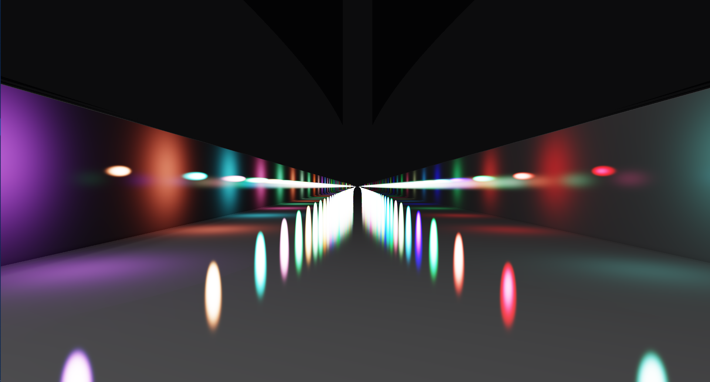

Minecraft, kezdetek
Bevezetésem a számítógépes grafika világába még gyerekként, a stratégiai és FPS videójátékokkal kezdődött. Egyetemen a számítógépes grafika kurzus befejezéséhez, hogy is választhattam volna mást, mint egy működő Minecraft klónt, az utolsó nagybeadandó erejéig. A két hetes munka elején még is sejtettem micsoda fába is vágtam bele a fejszémet.
Interaktív Renderelés, mélyvíz

A számítógépes grafika kurzus végével kezdődött csak el igazán megmártózásom a grafika végtelen óceánjába. Egyetemi kutatóprojekt keretein belül megkaptam saját feladatnak, hogy készítsek el házonbelüli, sugárkövetéses fény és árnyék számoló shader-ekhez egy renderelő motort, amivel tetszőleges számú, színű, méretű fényforrás jeleníthető meg egy interaktív színtéren.
A projekt másfél éve alatt sok mindent tanultam az objektum orientált szemléletmódról, a SOLID design elvekről és általánosságban egy homogén kódolási konvenció tartásáról, hogy egy közepes méretű projektet is átláthatóan tudjak kezelni.
Malibu és a kókuszfák

A grafika kihívásokkal és matematikával teli világa, mint arra idővel rájöttem, nem a dizájnerek és kreatív emberek paradicsoma. Az informatika ezen diszciplínája olyan mértékű odaadást követel meg az embertől, amelyre ha ő nem érzi teljes mértékben elhivatottnak magát, amely többnek bizonyul, mint amennyit adni hajlandó neki az életéből.
Én ezen emberek közé tartozom, így az egyetem és az Interaktív Renderelő projekt végével búcsút is mondtam ennek a kusza szőrökkel benőtt, kemény kérgű területnek, melynek kókusza számomra ennyi fejtörést nem ér meg.
Kalandos utam végére rájöttem, hogy szívesebben játszom a videójátékokkal, mint készítem a shader-eiket, de remélhetőleg így is bele fogom tudni tenni a részemet a weblapfejlesztés és design terén.